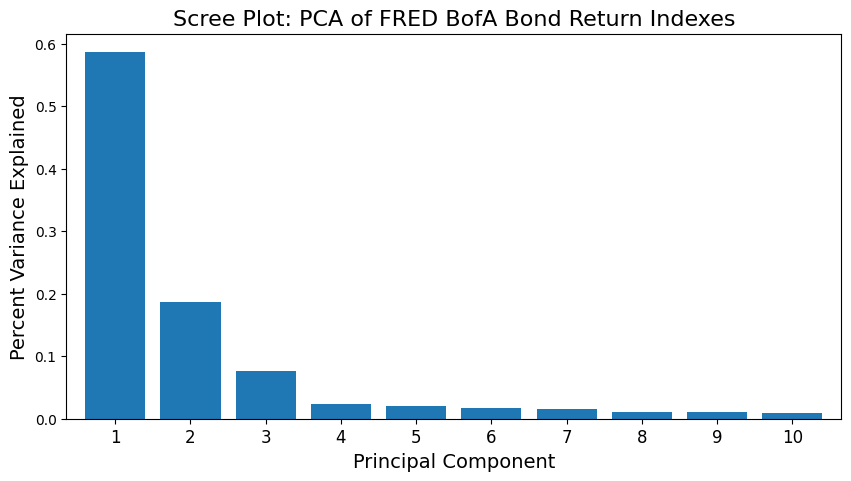
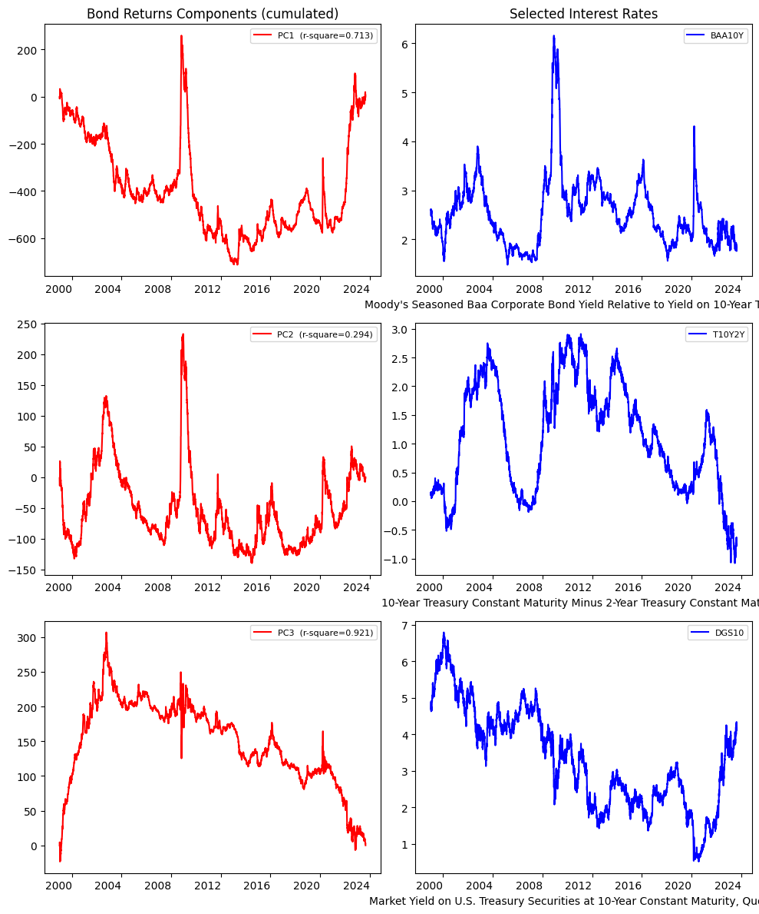

Bond Returns#
UNDER CONSTRUCTION
PCA
bond portfolio returns
import numpy as np
import pandas as pd
from pandas import DataFrame, Series
import matplotlib.pyplot as plt
import statsmodels.api as sm
from finds.readers import Alfred
from finds.misc import Show
from secret import credentials, paths
# %matplotlib qt
VERBOSE = 0
show = Show(ndigits=4, latex=None)
imgdir = paths['images'] / 'ts'
alf = Alfred(api_key=credentials['fred']['api_key'], verbose=VERBOSE)
Bond Return Components
## get Merrill Lynch bond indexes
c = alf.get_category(32413)
print(c['id'], c['name'])
t = Series({s['id']: s['title'] for s in c['series']})
t
https://api.stlouisfed.org/fred/category?category_id=32413&api_key=eb428f329807459fa7bee89be4ebbc3b&file_type=json
https://api.stlouisfed.org/fred/category/children?category_id=32413&api_key=eb428f329807459fa7bee89be4ebbc3b&file_type=json
https://api.stlouisfed.org/fred/category/series?category_id=32413&api_key=eb428f329807459fa7bee89be4ebbc3b&file_type=json&offset=0
https://api.stlouisfed.org/fred/category/series?category_id=32413&api_key=eb428f329807459fa7bee89be4ebbc3b&file_type=json&offset=1000
32413 BofA Merrill Lynch Total Bond Return Index Values
BAMLCC0A0CMTRIV ICE BofA US Corporate Index Total Return Index...
BAMLCC0A1AAATRIV ICE BofA AAA US Corporate Index Total Return I...
BAMLCC0A2AATRIV ICE BofA AA US Corporate Index Total Return In...
BAMLCC0A3ATRIV ICE BofA Single-A US Corporate Index Total Ret...
BAMLCC0A4BBBTRIV ICE BofA BBB US Corporate Index Total Return I...
BAMLCC1A013YTRIV ICE BofA 1-3 Year US Corporate Index Total Ret...
BAMLCC2A035YTRIV ICE BofA 3-5 Year US Corporate Index Total Ret...
BAMLCC3A057YTRIV ICE BofA 5-7 Year US Corporate Index Total Ret...
BAMLCC4A0710YTRIV ICE BofA 7-10 Year US Corporate Index Total Re...
BAMLCC7A01015YTRIV ICE BofA 10-15 Year US Corporate Index Total R...
BAMLCC8A015PYTRIV ICE BofA 15+ Year US Corporate Index Total Ret...
BAMLEM1BRRAAA2ACRPITRIV ICE BofA AAA-A Emerging Markets Corporate Plus...
BAMLEM1RAAA2ALCRPIUSTRIV ICE BofA AAA-A US Emerging Markets Liquid Corp...
BAMLEM2BRRBBBCRPITRIV ICE BofA BBB Emerging Markets Corporate Plus I...
BAMLEM2RBBBLCRPIUSTRIV ICE BofA BBB US Emerging Markets Liquid Corpor...
BAMLEM3BRRBBCRPITRIV ICE BofA BB Emerging Markets Corporate Plus In...
BAMLEM3RBBLCRPIUSTRIV ICE BofA BB US Emerging Markets Liquid Corpora...
BAMLEM4BRRBLCRPITRIV ICE BofA B & Lower Emerging Markets Corporate ...
BAMLEM4RBLLCRPIUSTRIV ICE BofA B & Lower US Emerging Markets Liquid ...
BAMLEM5BCOCRPITRIV ICE BofA Crossover Emerging Markets Corporate ...
BAMLEMALLCRPIASIAUSTRIV ICE BofA Asia US Emerging Markets Liquid Corpo...
BAMLEMCBPITRIV ICE BofA Emerging Markets Corporate Plus Index...
BAMLEMCLLCRPIUSTRIV ICE BofA US Emerging Markets Liquid Corporate ...
BAMLEMEBCRPIETRIV ICE BofA Euro Emerging Markets Corporate Plus ...
BAMLEMELLCRPIEMEAUSTRIV ICE BofA EMEA US Emerging Markets Liquid Corpo...
BAMLEMFLFLCRPIUSTRIV ICE BofA Financial US Emerging Markets Liquid ...
BAMLEMFSFCRPITRIV ICE BofA Private Sector Financial Emerging Mar...
BAMLEMHBHYCRPITRIV ICE BofA High Yield Emerging Markets Corporate...
BAMLEMHGHGLCRPIUSTRIV ICE BofA High Grade US Emerging Markets Liquid...
BAMLEMHYHYLCRPIUSTRIV ICE BofA High Yield US Emerging Markets Liquid...
BAMLEMIBHGCRPITRIV ICE BofA High Grade Emerging Markets Corporate...
BAMLEMLLLCRPILAUSTRIV ICE BofA Latin America US Emerging Markets Liq...
BAMLEMNFNFLCRPIUSTRIV ICE BofA Non-Financial US Emerging Markets Liq...
BAMLEMNSNFCRPITRIV ICE BofA Non-Financial Emerging Markets Corpor...
BAMLEMPBPUBSICRPITRIV ICE BofA Public Sector Issuers Emerging Market...
BAMLEMPTPRVICRPITRIV ICE BofA Private Sector Issuers Emerging Marke...
BAMLEMPUPUBSLCRPIUSTRIV ICE BofA Public Sector Issuers US Emerging Mar...
BAMLEMPVPRIVSLCRPIUSTRIV ICE BofA Private Sector Issuers US Emerging Ma...
BAMLEMRACRPIASIATRIV ICE BofA Asia Emerging Markets Corporate Plus ...
BAMLEMRECRPIEMEATRIV ICE BofA EMEA Emerging Markets Corporate Plus ...
BAMLEMRLCRPILATRIV ICE BofA Latin America Emerging Markets Corpor...
BAMLEMUBCRPIUSTRIV ICE BofA US Emerging Markets Corporate Plus In...
BAMLEMXOCOLCRPIUSTRIV ICE BofA Crossover US Emerging Markets Liquid ...
BAMLHE00EHYITRIV ICE BofA Euro High Yield Index Total Return In...
BAMLHYH0A0HYM2TRIV ICE BofA US High Yield Index Total Return Inde...
BAMLHYH0A1BBTRIV ICE BofA BB US High Yield Index Total Return I...
BAMLHYH0A2BTRIV ICE BofA Single-B US High Yield Index Total Re...
BAMLHYH0A3CMTRIV ICE BofA CCC & Lower US High Yield Index Total...
dtype: object
b = [] # accumulate bond returns
for s in t.index:
b.append(alf(s, start=19961231) )
bonds = pd.concat(b, axis=1)
## Show blocks of data available
v = bonds.notna().sum(axis=1).rename('count')
v = pd.concat([v, (v != v.shift()).cumsum().rename('notna')], axis=1)
g = v.reset_index().groupby(['notna', 'count'])['date'].agg(['first','last'])
g
| first | last | ||
|---|---|---|---|
| notna | count | ||
| 1 | 15 | 19961231 | 19971230 |
| 2 | 16 | 19971231 | 19981230 |
| 3 | 33 | 19981231 | 20031230 |
| 4 | 48 | 20031231 | 20181108 |
| 5 | 46 | 20181109 | 20181109 |
| 6 | 48 | 20181112 | 20230829 |
start_date = 19981231
rets = bonds.loc[bonds.index >= start_date,
bonds.loc[start_date].notna().values]
rets = pd.concat([alf.transform(rets[col], log=1, diff=1)
for col in rets.columns], axis=1)
show(Series(alf.header(rets.columns),
index=rets.columns,
name='title').to_frame().rename_axis('series'),
max_colwidth=88,
caption="Bond Index Total Returns")
| title | |
|---|---|
| Bond Index Total Returns | |
| BAMLCC0A0CMTRIV | ICE BofA US Corporate Index Total Return Index... |
| BAMLCC0A1AAATRIV | ICE BofA AAA US Corporate Index Total Return I... |
| BAMLCC0A2AATRIV | ICE BofA AA US Corporate Index Total Return In... |
| BAMLCC0A3ATRIV | ICE BofA Single-A US Corporate Index Total Ret... |
| BAMLCC0A4BBBTRIV | ICE BofA BBB US Corporate Index Total Return I... |
| BAMLCC1A013YTRIV | ICE BofA 1-3 Year US Corporate Index Total Ret... |
| BAMLCC2A035YTRIV | ICE BofA 3-5 Year US Corporate Index Total Ret... |
| BAMLCC3A057YTRIV | ICE BofA 5-7 Year US Corporate Index Total Ret... |
| BAMLCC4A0710YTRIV | ICE BofA 7-10 Year US Corporate Index Total Re... |
| BAMLCC7A01015YTRIV | ICE BofA 10-15 Year US Corporate Index Total R... |
| BAMLCC8A015PYTRIV | ICE BofA 15+ Year US Corporate Index Total Ret... |
| BAMLEM1BRRAAA2ACRPITRIV | ICE BofA AAA-A Emerging Markets Corporate Plus... |
| BAMLEM2BRRBBBCRPITRIV | ICE BofA BBB Emerging Markets Corporate Plus I... |
| BAMLEM3BRRBBCRPITRIV | ICE BofA BB Emerging Markets Corporate Plus In... |
| BAMLEM4BRRBLCRPITRIV | ICE BofA B & Lower Emerging Markets Corporate ... |
| BAMLEM5BCOCRPITRIV | ICE BofA Crossover Emerging Markets Corporate ... |
| BAMLEMCBPITRIV | ICE BofA Emerging Markets Corporate Plus Index... |
| BAMLEMEBCRPIETRIV | ICE BofA Euro Emerging Markets Corporate Plus ... |
| BAMLEMFSFCRPITRIV | ICE BofA Private Sector Financial Emerging Mar... |
| BAMLEMHBHYCRPITRIV | ICE BofA High Yield Emerging Markets Corporate... |
| BAMLEMIBHGCRPITRIV | ICE BofA High Grade Emerging Markets Corporate... |
| BAMLEMNSNFCRPITRIV | ICE BofA Non-Financial Emerging Markets Corpor... |
| BAMLEMPBPUBSICRPITRIV | ICE BofA Public Sector Issuers Emerging Market... |
| BAMLEMPTPRVICRPITRIV | ICE BofA Private Sector Issuers Emerging Marke... |
| BAMLEMRACRPIASIATRIV | ICE BofA Asia Emerging Markets Corporate Plus ... |
| BAMLEMRECRPIEMEATRIV | ICE BofA EMEA Emerging Markets Corporate Plus ... |
| BAMLEMRLCRPILATRIV | ICE BofA Latin America Emerging Markets Corpor... |
| BAMLEMUBCRPIUSTRIV | ICE BofA US Emerging Markets Corporate Plus In... |
| BAMLHE00EHYITRIV | ICE BofA Euro High Yield Index Total Return In... |
| BAMLHYH0A0HYM2TRIV | ICE BofA US High Yield Index Total Return Inde... |
| BAMLHYH0A1BBTRIV | ICE BofA BB US High Yield Index Total Return I... |
| BAMLHYH0A2BTRIV | ICE BofA Single-B US High Yield Index Total Re... |
| BAMLHYH0A3CMTRIV | ICE BofA CCC & Lower US High Yield Index Total... |
# Marginal Variance Explained
x = np.array(rets.iloc[1:].replace(np.nan, 0))
d = rets.iloc[1:].index.rename(None)
c = rets.columns
r = 3
"""
from finds.alfred import marginalRsq
mR2 = marginalRsq(x, standardize=True)
print(f"Explained by {r} factors: {np.sum(np.mean(mR2[:r,:], axis=1)):.3f}"
f" ({len(x)} obs)")
df = DataFrame({'explained': np.mean(mR2, axis=1)},
index=np.arange(1, len(mR2) + 1))
df.iloc[4]
"""
'\nfrom finds.alfred import marginalRsq\nmR2 = marginalRsq(x, standardize=True)\nprint(f"Explained by {r} factors: {np.sum(np.mean(mR2[:r,:], axis=1)):.3f}"\n f" ({len(x)} obs)")\ndf = DataFrame({\'explained\': np.mean(mR2, axis=1)},\n index=np.arange(1, len(mR2) + 1))\ndf.iloc[4]\n'
## Same calculation with sklearn
from sklearn.preprocessing import StandardScaler
from sklearn.pipeline import Pipeline
from sklearn.decomposition import PCA
pipe = Pipeline([('scaler', StandardScaler()), ('pca', PCA())])
pipe.fit(x)
print(pipe.named_steps['pca'].explained_variance_ratio_) # sanity check
scree = Series(pipe.named_steps['pca'].explained_variance_ratio_,
index=np.arange(1, x.shape[1]+1))
[5.86789902e-01 1.86999891e-01 7.70507495e-02 2.31692776e-02
2.09236720e-02 1.74466819e-02 1.59969576e-02 1.11997496e-02
1.08857821e-02 9.62694118e-03 7.23593993e-03 5.86580950e-03
5.18815697e-03 4.67376507e-03 4.08324626e-03 2.59381179e-03
2.45324538e-03 2.30697359e-03 1.37010289e-03 9.79850816e-04
8.05769526e-04 6.38160060e-04 4.08352451e-04 3.82511512e-04
3.14728492e-04 2.77963772e-04 9.32990978e-05 8.59047248e-05
5.50770945e-05 4.00939820e-05 3.59304585e-05 1.58570390e-05
5.84577715e-06]
## Scree plot
fig, ax = plt.subplots(num=1, clear=True, figsize=(10, 5))
scree[:10].plot(kind='bar', rot=0, width=.8, ax=ax)
ax.set_title('Scree Plot: PCA of FRED BofA Bond Return Indexes', fontsize=16)
ax.xaxis.set_tick_params(labelsize=12)
ax.set_ylabel("Percent Variance Explained", fontsize=14)
ax.set_xlabel("Principal Component", fontsize=14)
plt.savefig(imgdir / 'scree.jpg')

# Rsquare of components explained by Interest Rate Indicators
rates = ['BAA10Y', 'T10Y2Y', 'DGS10'] # compare rate levels
rates = pd.concat([alf(s) for s in rates], axis=1).reindex(d).pad()
rates.index = pd.DatetimeIndex(rates.index.astype(str), freq='infer')
/tmp/ipykernel_4082727/620974196.py:3: FutureWarning: DataFrame.pad/Series.pad is deprecated. Use DataFrame.ffill/Series.ffill instead
rates = pd.concat([alf(s) for s in rates], axis=1).reindex(d).pad()
factors = DataFrame(pipe.transform(x)[:, :3],
columns=np.arange(1, 4),
index=pd.DatetimeIndex(d.astype(str), freq='infer'))
rsq = [sm.OLS(factors[col].cumsum(), rates).fit().rsquared
for col in factors.columns]
res = DataFrame({'Rsq of rate levels': rsq}, index=factors.columns)
res['Rsq of rate changes'] = [sm.OLS(factors[col],
rates.diff().fillna(0))\
.fit().rsquared
for col in factors.columns]
show(res, max_colwidth=75,
caption="R-squared of each PC explained by Interest Rate Indicators")
| Rsq of rate levels | Rsq of rate changes | |
|---|---|---|
| R-squared of each PC explained by Interest Rate Indicators | ||
| 1 | 0.7131 | 0.5263 |
| 2 | 0.2942 | 0.5016 |
| 3 | 0.9211 | 0.0499 |
# Plot of cumulative components and interest rates levels
fig = plt.figure(figsize=(10, 12), num=1, clear=True)
for isub, col in enumerate(factors.columns):
ax = fig.add_subplot(3, 2, (col * 2) - 1)
flip = -1 if col == 3 else 1
(flip*factors[col]).cumsum().plot(ax=ax, color='r')
ax.legend([f"PC{col} (r-square={rsq[isub]:.3})"], fontsize=8)
ax.xaxis.set_tick_params(rotation=0)
if not isub:
ax.set_title('Bond Returns Components (cumulated)')
ax = fig.add_subplot(3, 2, (isub + 1) * 2)
rates.iloc[:, isub].plot(ax=ax, color='b')
ax.legend([f"{rates.columns[isub]}"], fontsize=8)
ax.xaxis.set_tick_params(rotation=0)
if not isub:
ax.set_title('Selected Interest Rates')
ax.set_xlabel(alf.header(rates.columns[isub])[:80])
plt.savefig(imgdir / 'components.jpg')
plt.tight_layout()
